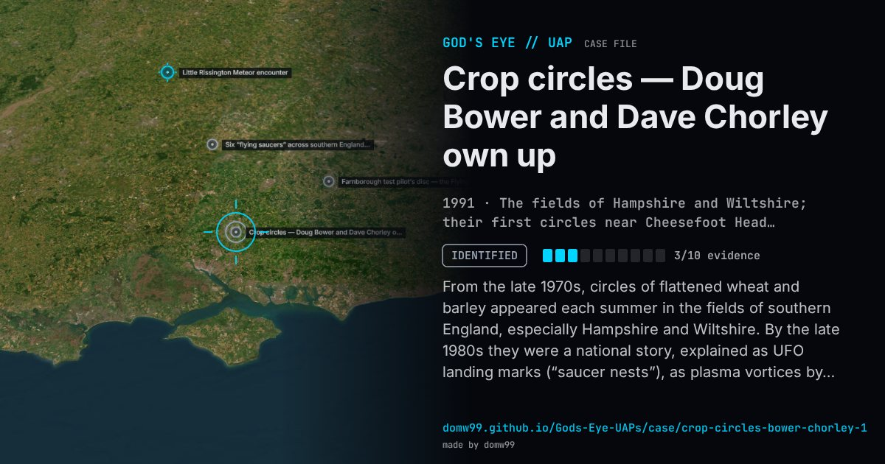

Crop circles — Doug Bower and Dave Chorley own up

From the late 1970s, circles of flattened wheat and barley appeared each summer in the fields of southern England, especially Hampshire and Wiltshire. By the late 1980s they were a national story, explained as UFO landing marks (“saucer nests”), as plasma vortices by the meteorologist Terence Meaden, and as messages by a new class of “cerealogists”. In September 1991 two men from Southampton, Doug Bower and Dave Chorley, told the newspaper Today that they had made circles since 1978, inspired by the 1966 Tully “saucer nest” in Australia, starting near Cheesefoot Head, and claimed more than 200 of them. They showed their tools, a plank, a rope and a cap with a wire loop to keep a straight line, and made a circle for journalists that the cerealogist Pat Delgado then declared authentic. Not every circle since is theirs, but none has been shown to have any cause other than people.
Explanation
Made by people. Doug Bower and Dave Chorley showed how they had made circles since 1978 with a plank, rope and a cap with a wire sighting loop, made one for journalists that a leading “cerealogist” declared genuine, and inspired the teams who make the elaborate designs today.
What was seen
Shape: Circles of flattened cereal crop, later rings and complex patterns
Witnesses: Doug Bower and Dave Chorley, and the journalists they demonstrated to
Duration: 1978–1991
Sources
- Wikipedia — Crop circle
- Interview with Dave Chorley, CBC radio, 9 September 1991 (transcribed by Patrick Gross)
Browse
- United Kingdom
- 1990s
- Identified
- Landing and trace cases
- Photographs
- Physical traces
- Spheres and orbs